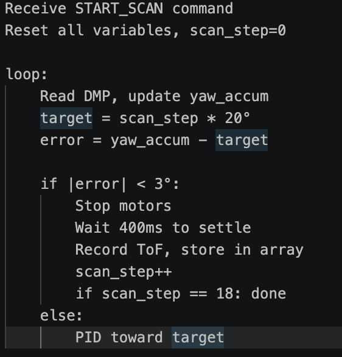
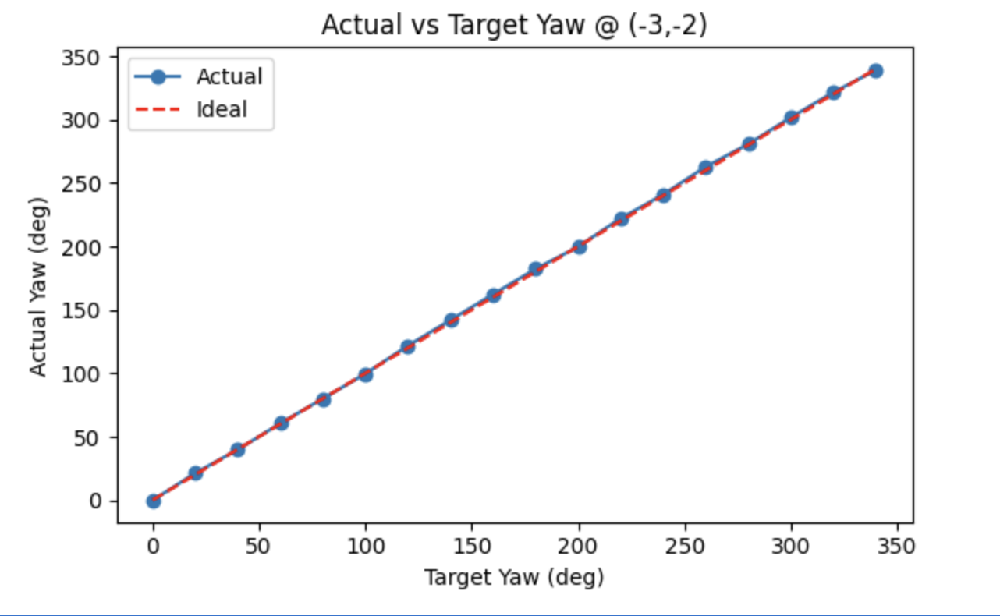
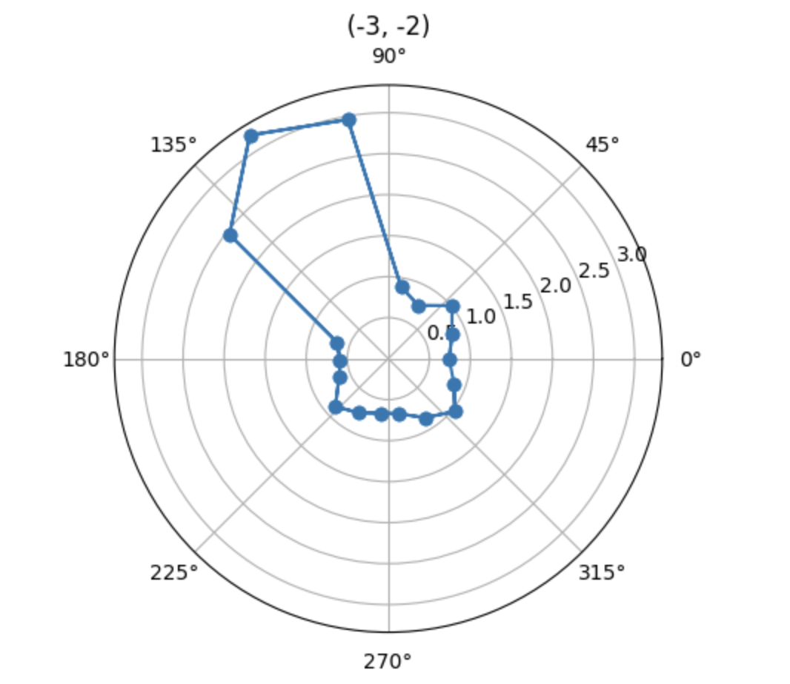
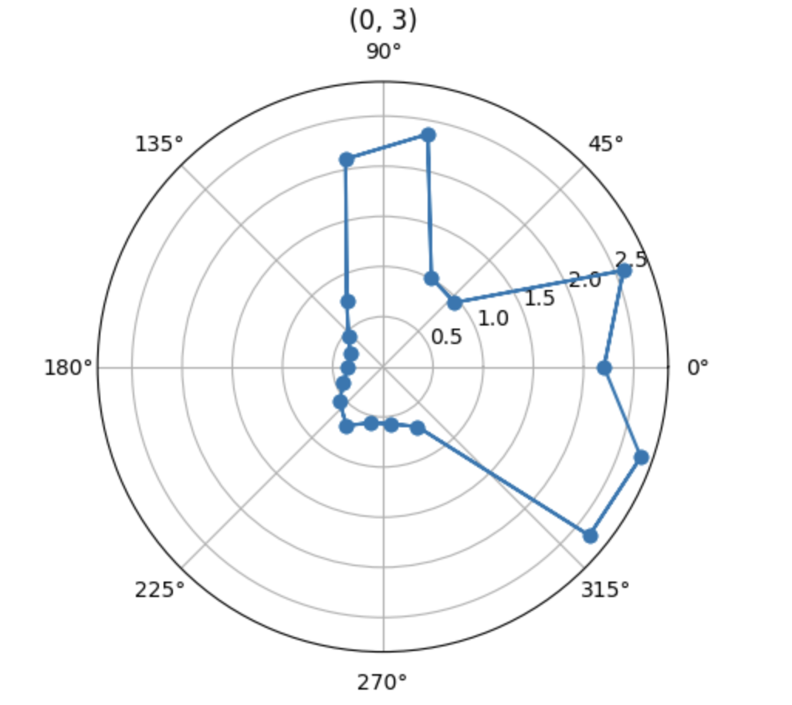
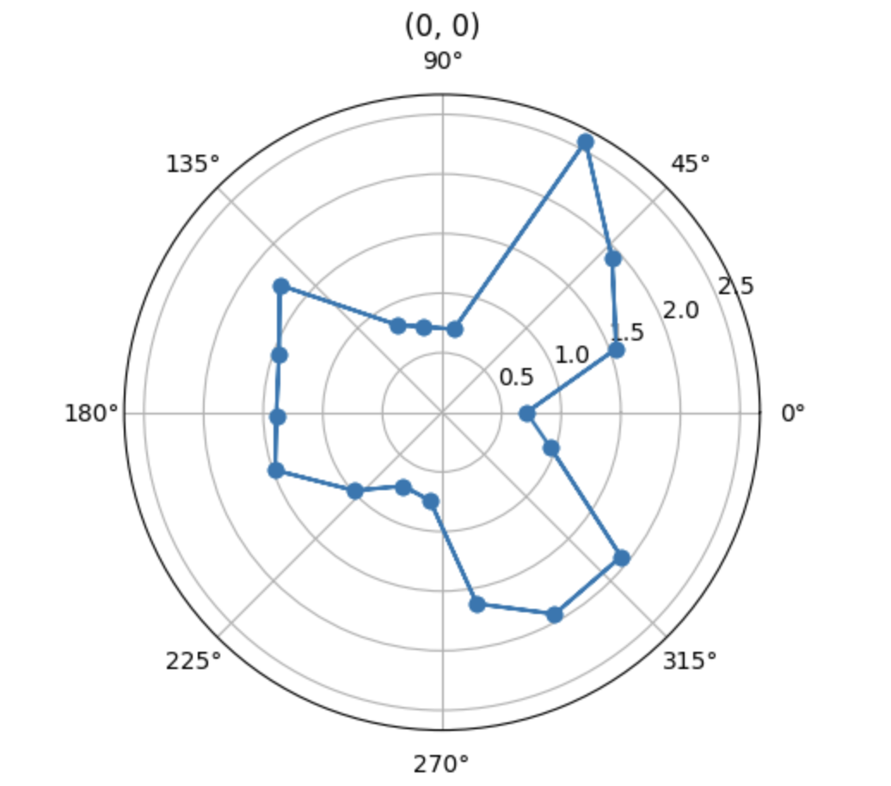
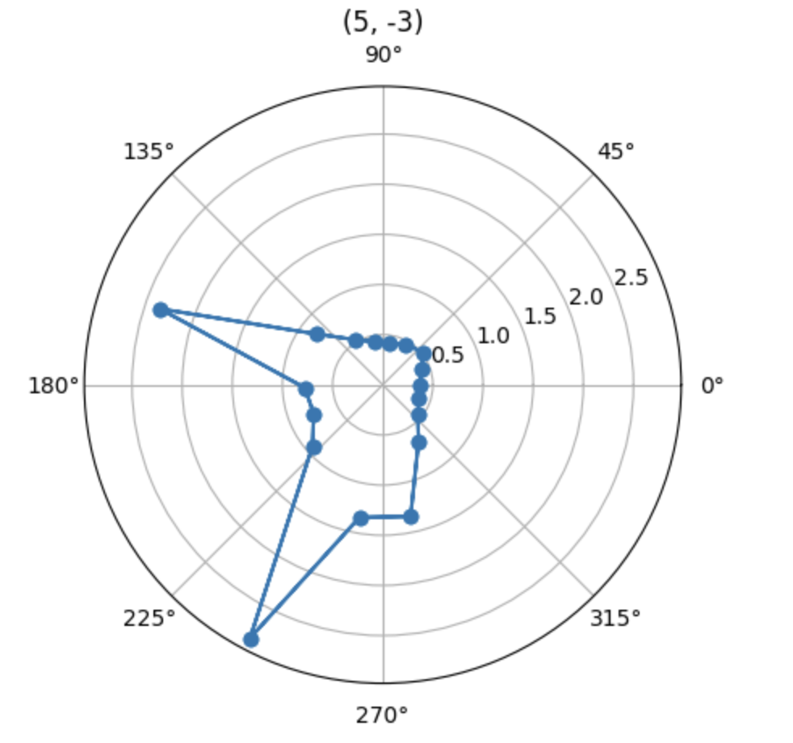
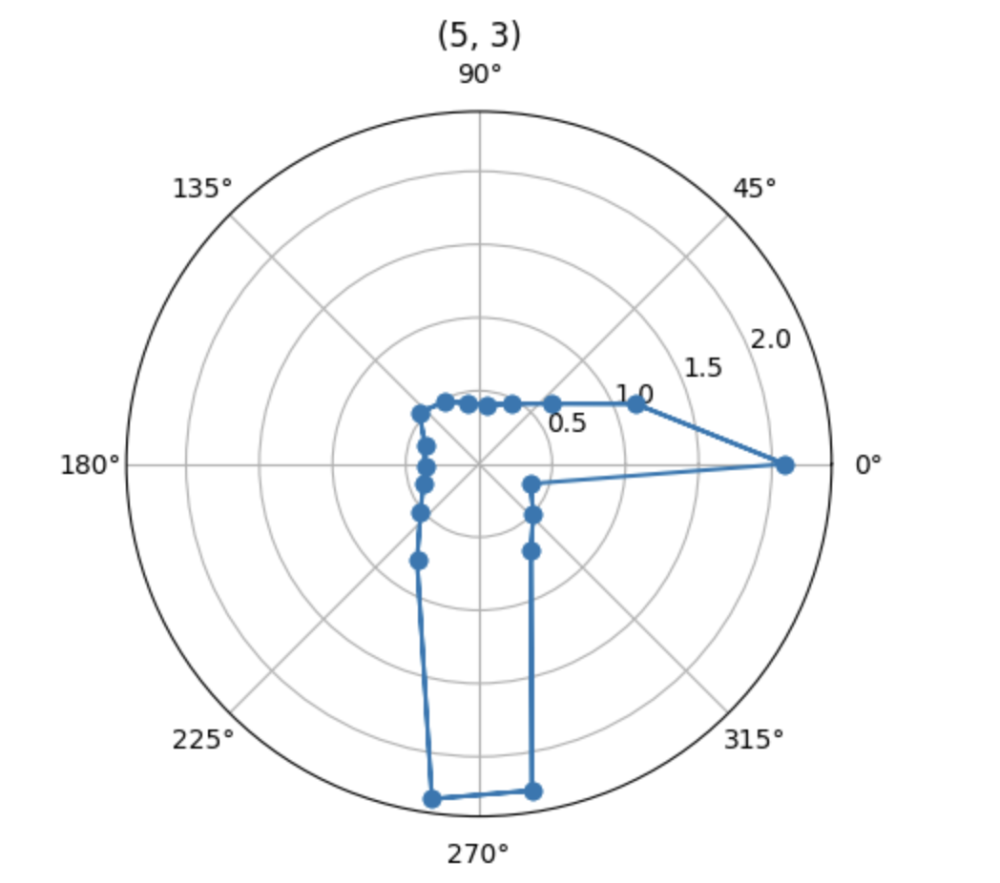
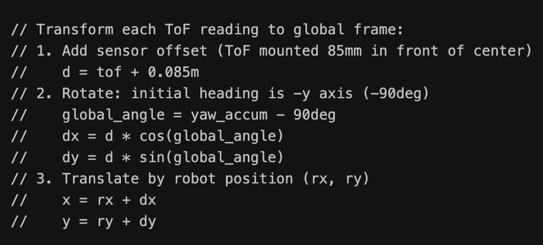
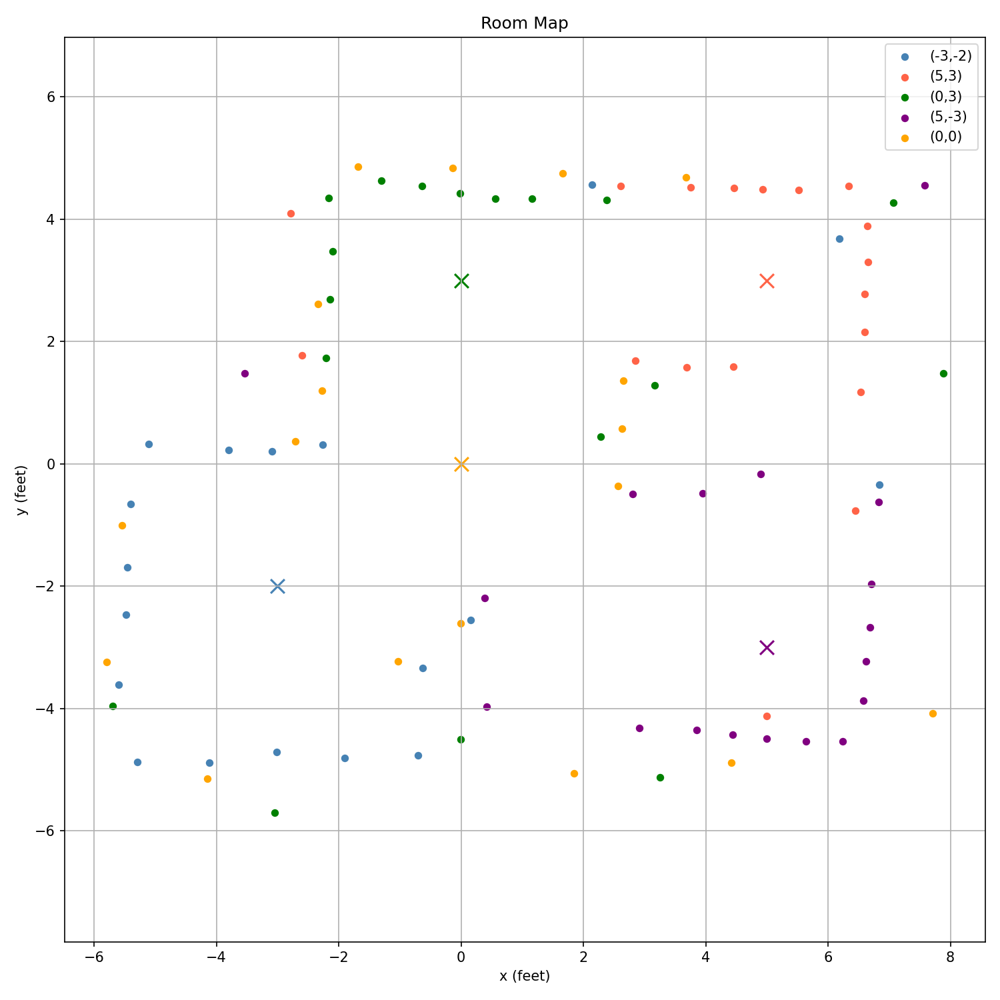
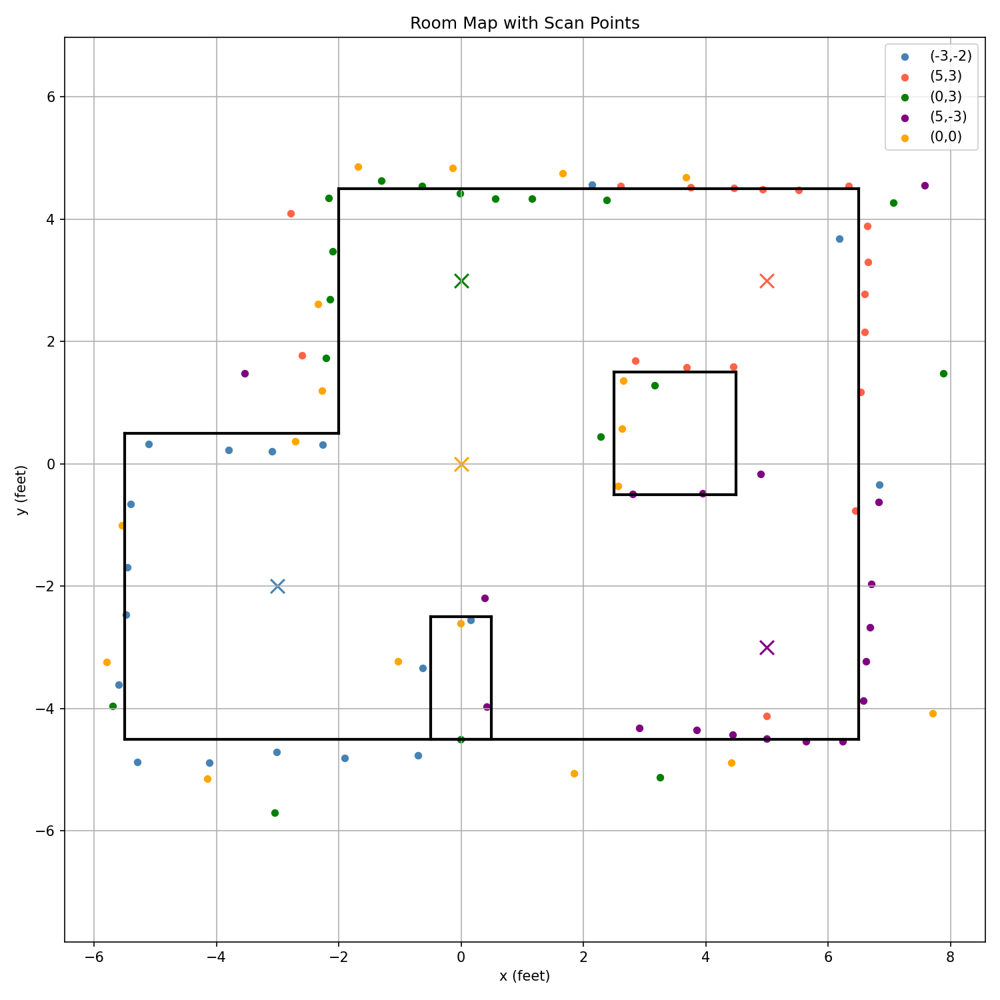

Lab 9: Mapping
Sample Control
I implemented a pose control method to facilitate sampling, executing a full 360° rotation in 18 steps, with each step covering 20 degrees. At each step, the robot uses a DMP-based approach to turn toward the target angle; it then pauses and waits for 400 milliseconds before recording the ToF reading. Once all 18 readings have been collected, the data is transmitted back via BLE. The pseudocode is as follows.

This is a video of the cart during sampling, demonstrating that the PID control is very stable. It can be observed that, due to static friction, the center point of the cart undergoes a small displacement while continuously rotating.
I compared the actual yaw angle of rotation against the set value of 20 degrees, demonstrating that the directional control is highly accurate.

Data Collection
I placed the robot in five positions: [(5,3), (0,3), (0,0), (-3,-2), (5,-3)], with the same orientation each time, facing the negative y-axis, and took measurements. The results are as follows.





Map Reconstruction
I measured the distance from the center of the robot to the ToF sensor as 85 mm. The following is my coordinate transformation algorithm.urate.

By integrating maps from five different locations, the final map is as follows.

Convert to Line-Based Map
After fine-tuning, the linear map is shown below.

The list of starting and ending points is shown below.
start_list = [(-2,4.5), (6.5,4.5), (-5.5,-4.5), (-5.5,-4.5), (-5.5,0.5), (-2,0.5), (-0.5,-2.5), (0.5,-2.5), (-0.5,-4.5), (-0.5,-2.5), (2.5,1.5), (4.5,1.5), (2.5,-0.5), (2.5,1.5)]
end_list = [(6.5,4.5), (6.5,-4.5), (6.5,-4.5), (-5.5,0.5), (-2,0.5), (-2,4.5), (0.5,-2.5), (0.5,-4.5), (0.5,-4.5), (-0.5,-4.5), (4.5,1.5), (4.5,-0.5), (4.5,-0.5), (2.5,-0.5)]
Statement
I got much help from Katherin Hsu's page.